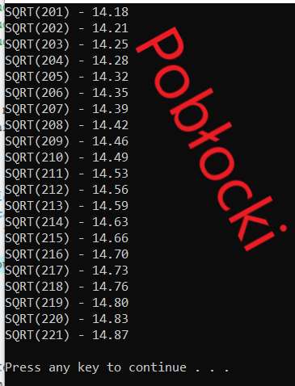

#include <cstdlib> #include <iostream> #include <stdio.h> #include <conio.h> #include <math.h> #include <iomanip> using namespace std; int main(int argc, char *argv[]) { // zmień granice pętli // wstaw dwa miejsca po przecinku for ( int i=201;i<=221;i++) { cout<<"SQRT("<<(i)<<") - "<<fixed<<setprecision(2)<< sqrt(i)<<""<<endl; } cout<<endl; system("PAUSE"); return EXIT_SUCCESS; }
